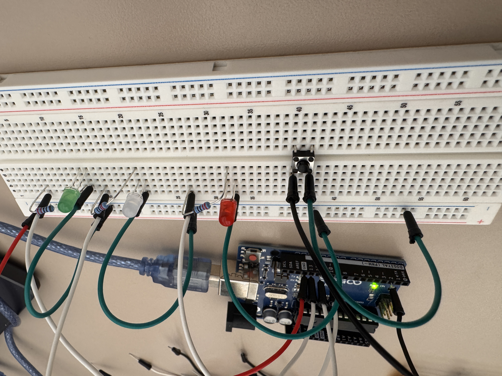

For this assignment, I made a Christmas light toy prototype using red, green, and white LEDs and a button. While the button is held, the red and green LEDs take turns lighting up while the white LED fades in and out.

The white LED connects to PWM pin 10, the red LED connects to pin 12, and the green LED connects to pin 13. Each LED has its own 220 ohm resistor to limit its current， which the calculation will showing in the following part. The button uses pin 2. My code enables the internal pull-up resistor which allow me don't need to more resistor on the button part, so pressing the button connects the input toward GND and gives a LOW reading.

I used a 5 V supply and a separate 220 ohm resistor for each LED. These are the values used for the calculations below. Since last time in A1 I used 100 ohm resistor for the lights which was lighting up too bright, so I change it to 220 ohm this time, and the current calculation is also showing under which is smaller than the arduino recommended current 20mA.
I used INPUT_PULLUP to enable the Arduino's internal pull-up resistor. It would hold the button input HIGH when released and limits current when the button connects the input to GND. https://docs.arduino.cc/tutorials/generic/digital-input-pullup/

This picture shows my Arduino Uno, breadboard, three LEDs, resistors, and button.

This second view shows the circuit connections. Each LED has a separate 220 ohm resistor, and the circuit shares the Arduino's GND connection.

The red LED turns on while the white LED fades in. Then the green LED turns on while the white LED fades out. The animation repeats while I hold the button. When I release the button, the current light cycle finishes.
The following code is I used for this Christmas Toy Lights.
// White LED on pin10.
#define whiteLED 10
// Red LED on pin12.
#define redLED 12
// Green LED on pin13.
#define greenLED 13
// Button input on pin2.
#define buttonPin 2
// Set up status for all the pins at the start.
void setup() {
// Set the white LED pin as an output.
pinMode(whiteLED, OUTPUT);
// Set the red LED pin as an output.
pinMode(redLED, OUTPUT);
// Set the green LED pin as an output.
pinMode(greenLED, OUTPUT);
// Use the internal pull-up resistor so the button reads HIGH when released.
pinMode(buttonPin, INPUT_PULLUP);
}
// Repeat the light animation in the following loop.
void loop() {
// Run 1 animation cycle when the button reads LOW (the button is pressed).
if (digitalRead(buttonPin) == LOW) {
// Turn on red LED.
digitalWrite(redLED, HIGH);
// Turn off green LED.
digitalWrite(greenLED, LOW);
// White LED's brightness increases from 0 to 255 by adding 5 each time.
for (int brightness = 0; brightness <= 255; brightness += 5) {
// Show white LED brightness.
analogWrite(whiteLED, brightness);
// At each increased brightness level Arduino will wait for 20 ms.
delay(20);
}
// Turn off red LED.
digitalWrite(redLED, LOW);
// Turn on green LED.
digitalWrite(greenLED, HIGH);
// White LED's brightness decreases from 255 to 0 by subtracting 5 each time.
for (int brightness = 255; brightness >= 0; brightness -= 5) {
// Show white LED brightness.
analogWrite(whiteLED, brightness);
// At each decreased brightness level Arduino will wait for 20 ms.
delay(20);
}
}
// Turn off all lights when button reads HIGH (the button is not pressed).
else {
// Turn off the white LED.
analogWrite(whiteLED, 0);
// Turn off the red LED.
digitalWrite(redLED, LOW);
// Turn off the green LED.
digitalWrite(greenLED, LOW);
}
}
If all three LEDs were fully on simultaneously, their estimated total current would be:
13.6 + 13.6 + 7.7 = 34.9 mA.
Each LED is below the Uno's recommended 20 mA per output pin. The combined LED current is also below the chip's 200 mA absolute maximum through its power and ground pins. Which the total current is below the total Arduino current draw limits
If all the LEDs were on:
Runtime = 1200 mAh / 35 mA = approximately 34.3 hours.
Around 34.3 hour that the battery can hold it.
I used the multimeter's 20 V range to measure the voltage across the red LED. The highest reading I observed was approximately 1.96 V. I also saw lower readings, including 1.72 V, 1.69 V and sometimes showing also 1.02V, during the animation. These may be affected by the meter updating while the LED switches on and off. The 1.96 V reading is 0.04 V, or about 2%, lower than the assumed theoretical red LED forward voltage of 2.0 V.
I used ChatGPT to check the coding part's bug, and make sure there's no bug happening in my code. I used ChatGPT to do the style write for me, so the whole web can look prettier, it's like so messsed up